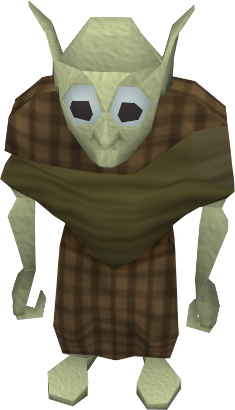

There are numerous creatures and ghouls throughout mythology! This website will cover a select few of my favorites and delve into their different types!

| Outline of Creatures Featured! | |
|---|---|
| The Goblin |
|
| The Mothman |
|
| The Bigfoot |
|